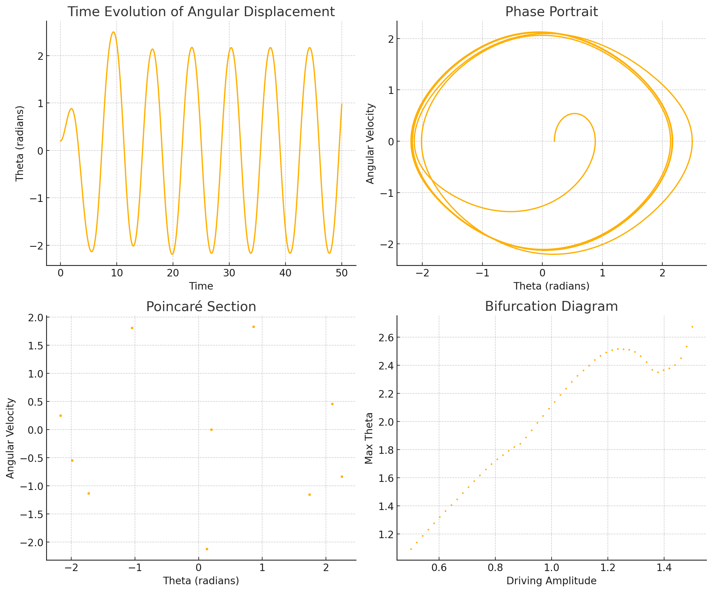

Theoretical Foundation
Governing Equation
The motion of a forced damped pendulum is described by the following differential equation:
where: - \( \theta \) is the angular displacement, - \( \gamma \) is the damping coefficient, - \( \omega_0 = \sqrt{g/L} \) is the natural frequency, - \( A \) is the amplitude of the driving force, - \( \omega \) is the driving frequency.
For small angles (\( \theta \approx \sin \theta \)), the equation simplifies to:
Approximate Solution for Small Angles
The homogeneous part of the equation has a solution of the form:
where \( \Omega = \sqrt{\omega_0^2 - (\gamma/2)^2} \).
The particular solution for the forced response is:
The general solution is:
where \( \delta \) is the phase lag.
Resonance Condition
Resonance occurs when the driving frequency \( \omega \) approaches the natural frequency \( \omega_0 \), leading to a peak in oscillation amplitude:
At resonance, energy transfer is maximized, leading to large oscillations unless damped.
Analysis of Dynamics
Influence of Parameters
- Damping Coefficient (\( \gamma \)): Higher \( \gamma \) reduces amplitude and smoothens motion.
- Driving Amplitude (\( A \)): Larger \( A \) increases oscillation magnitude.
- Driving Frequency (\( \omega \)): Near \( \omega_0 \), resonance amplifies oscillations.
Transition to Chaos
As \( A \) increases, the system exhibits: 1. Periodic Motion: Regular oscillations. 2. Quasi-Periodic Motion: Small variations in motion. 3. Chaotic Motion: Irregular, sensitive dependence on initial conditions.
Practical Applications
- Energy Harvesting: Extracting energy from oscillations (e.g., piezoelectric systems).
- Suspension Bridges: Wind-induced oscillations can lead to resonance and structural failure.
- Oscillating Circuits: Analogous to driven RLC circuits.
Implementation
Python Simulation
We use the Runge-Kutta method to simulate the pendulum motion:

Discussion
Limitations
- Assumes small-angle approximation; for large angles, \( \sin \theta \) must be used.
- Real-world damping can be nonlinear, requiring refined models.
- External forces may be non-periodic, complicating analysis.
Potential Extensions
- Nonlinear Damping: Introducing terms like \( \gamma \dot{\theta}^2 \) for realistic dissipation.
- Stochastic Forcing: Exploring the effect of random fluctuations.
- Coupled Pendulums: Studying interactions in multi-body systems.
Conclusion
This analysis of the forced damped pendulum bridges theory and computation, providing insights into periodic, resonant, and chaotic behaviors. The study has real-world implications in physics and engineering, influencing the design of stable, efficient oscillatory systems.